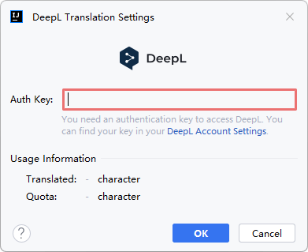
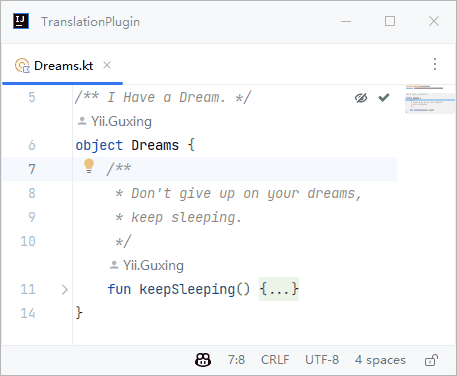
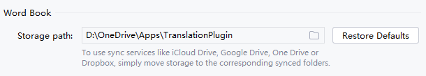

Version 3.4 (2022-11-29)
Welcome to Translation v3.4. There are many updates in this version that we hope you will like, some key highlights include:
- Microsoft Translation Engine (Experimental) - New translation engine: Microsoft Translator.
- DeepL Translation Engine - New translation engine: DeepL Translator.
- Independent Documentation Translation Status (Experimental) - Each documentation has its own independent translation status.
- Documentation Inlay Message - Display error messages within the documentation in case of documentation translation errors.
- Wordbook Data Synchronization - Supports syncing data between multiple devices via sync service.
Translation #
Microsoft Translation Engine (Experimental) #

Microsoft Translator is a neural machine translation service based on the Microsoft Azure Cloud. The service uses modern neural machine translation technology and offers statistical machine translation technology. Now you can use it in plugin without any configuration.
Microsoft Translation Engine is an Experimental feature and is enabled by default. It may be dropped or changed at any time.
DeepL Translation Engine #

DeepL translator claims to be the world's most accurate and nuanced machine translation, and is over 3x more accurate than its closest competitors. It is now integrated into the plugin, through which you can get a high-quality translation experience. To use the DeepL translation engine, you need to have a DeepL account, and configure your account's authentication key in the DeepL translation engine configuration dialog. You can find your authentication key in your account settings.

DeepL authentication keys are available in two plans DeepL API Free and DeepL API Pro. With the DeepL API Free plan, you can translate up to 500,000 characters per month for free. DeepL API Free authentication keys can be identified easily by the suffix ":fx" (e.g., 279a2e9d-83b3-c416-7e2d-f721593e42a0:fx).
In addition, you can check the translation usage of your current billing period on the DeepL translation engine configuration dialog.
Documentation Translation #
Independent Documentation Translation Status (Experimental) #
Each documentation can now have its own independent translation state instead of just one global state as before. Therefore, when you change the translation status of a documentation, it will no longer affect other documentations.

Independent Documentation Translation Status is an Experimental feature and is enabled by default. It may be dropped or changed at any time.
Documentation Inlay Message #
When a documentation translation error occurs, an error message is now displayed inline in the document indicating that the translation of the current document was not successful.

Wordbook #
Wordbook Data Synchronization #
It is now possible to change the storage path of the wordbook and sync data between multiple devices using sync services such as iCloud Drive, Google Drive, One Drive, and Dropbox. To synchronize data using the sync service, simply set the storage path to the corresponding synced folder.

Thank You #
A big Thank You to the contributors of this release:
- @naoyukik (Kodama Naoyuki): Support a new translator API: DeepL PR #986.